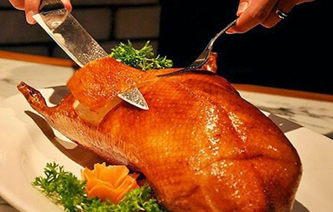
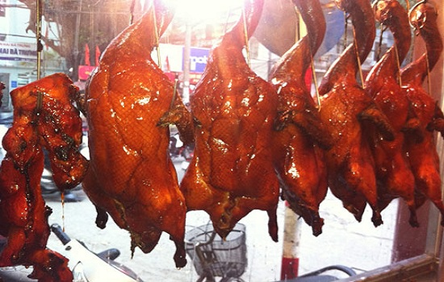

Vịt quay lá móc mật vùng biên giới xứ Lạng Lạng Sơn không chỉ được biết đến với măng ớt Đồng Mỏ mà còn nổi tiếng với vịt quay lá móc mật. Du khách đã từng một lần đặt chân lên đất Lạng, được thưởn thức những miếng thịt vịt quay thơm lừng, nhâm nhi cùng rượu Mẫu Sơn thì quả là thật hấp dẫn. Nhiều người kháo nhau rằng nếu đến Lạng Sơn mà chưa thưởng thức vịt quay thì thật tiếc. Không phải chỉ riêng Lạng Sơn mới có món vịt quay nhưng độc đáo nhất trong hương vị phải kể tới món vịt quay móc mật – đặc sản nơi đây.
Để có được món vịt quay mang thương hiệu Lạng Sơn, ngay từ khâu chọn nguyên liệu đã đòi hỏi những yêu cầu khắt khe. Vịt để quay móc mật thường là loại vịt bầu, có nguồn gốc từ chợ bến Hòa Bình được mang lên đây nuôi dưỡng từ nhiều năm trước với điều kiện sinh sống phù hợp nên chất lượng thịt vịt được tăng lên. Vịt được buộc chặt cổ để khi nhồi nhân, hỗn hợp nhân sẽ không chảy ra được. Mỗi con vịt được nhồi khoảng 3-4 muôi nước sốt trước khi được khâu kín lại, bơm căng lên.
Công đoạn pha chế nước dùng nhồi bụng vịt chính là yếu tố quyết định vị ngon của thịt vịt quay mắc mật. Để làm nước sốt nhồi vịt cần phải có hơn 10 loại gia vị. Gia vị chính là lá và quả móc mật mang mùi thơm đặc trưng. Thịt vịt quay cùng lá móc mật tạo sự cân bằng âm dương và tạo nên sự hấp dẫn cho món ăn nhưng không hề ngấy. Các gia vị tẩm ướp khác như đinh hương, thảo quả, hoa hồi, hạt tiêu, xì dầu, muối, mật ong, hành, tỏi…và một loại đậu tương lên men tên gọi tàu tro.
Vịt quay lá móc mật có hương vị đặc trưng riêng của mảnh đất Lạng Sơn
Sau khi công việc bơm được hoàn tất, vịt sẽ được tưới qua nước sôi già cho da săn lại, căng bóng và mỡ màng. Vịt còn được tắm qua nước pha chút mật ong để vịt thơm, ngọt mềm và vàng óng. Vịt được treo trong một lò trụ cao được làm từ hợp kim đặc biệt, phía dưới hở để lấy hơi nóng từ lò than từ từ làm vịt khô đều, săn mà không bị cháy. Sau khoảng 20 phút, công đoạn chao vịt mới được tiến hành. Vịt được chao trong dầu sôi từ 25-30 phút nữa là thịt đã chín đều và đã sẵn sàng để thưởng thức.
Vịt chín da căng bóng, tỏa mùi thơm ngậy của thịt vịt và lá móc mật. Khi chặt vịt quay, người ta thường khéo léo chắt lấy lại phần nước trong con vịt trộn thêm các gia vị để chấm vịt thay cho xì dầu hay nước mắm thông thường. Miếng thịt thơm ngào ngạt hương móc mật, ngọt ngậy vị mật ong; từng lớp da, mỡ, thịt xem kẻ nhìn thôi đã ưng mắt đói bụng. Lúc này chỉ cần thêm chai rượu Mẫu Sơn là bữa nhậu rượu thịt đã muôn phần đủ đầy.
Công đoạn chế biến món vịt quay lá móc mật rất cầu kỳ đòi hỏi người làm phải tỉ mỉ và khéo léo
Thịt vịt vừa mềm, vừa béo, lớp da dai giòn, quyện vị nhân nhẳn chát của mắc mật khiến vị Lạng Sơn trở nên khó quên hơn bao giờ hết. Thứ thịt béo mà không ngậy, ngọt mặn hài hòa, lại nhân nhẩn chát vị lá rừng là món ăn để thương, ăn để nhớ, ăn để hiểu về mảnh đất biên giới xứ Lạng.